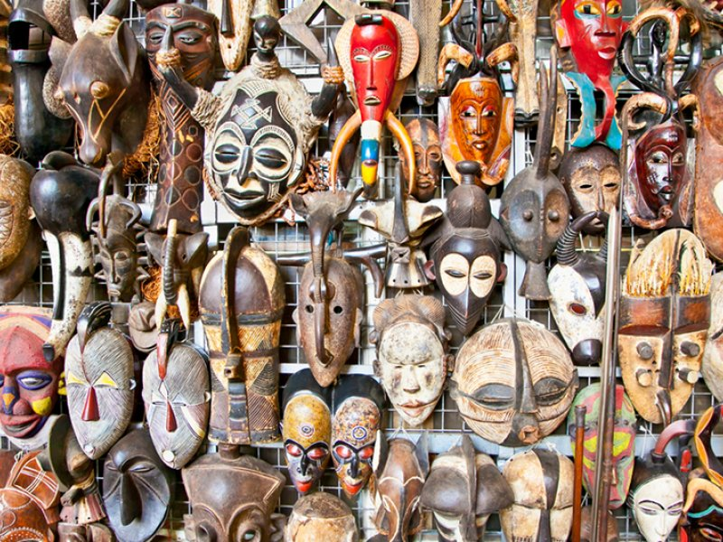

Początek świata
W religiach afrykanskich stwórczy bóg przyjmuje różne formy. Możemy mieć do czynienia albo z pojedyńczym bogiem, albo z całym ich panteonem. Bóg może być boskim oszustem,jednocześnie pełnym majestatu i pokory, duchem ładu i nieporządku, niekiedy twórczym,
kiedy indziej destruktywnym. Boski oszust to symbol okresu przemian, charakterystycznego dla wieku stworzenia - przemieszczając się od wieku doskonałego, złotego, ku czasom współczesnym, uosabia zmiany - oddala się od boskiej doskonałości,
przybliżając do niedoskonałogo człowieka.
W wieku współczesnym nie ma już boskiego oszusta, pozostaje tylko oszust ziemski, czyli postać nieprzewidywalna - resztki jego kreatywności mają swój przejaw w iluzjach, jakie
tworzy; swoją amoralność manifestuje w oburzającym zachowaniu, niejednokrotnie aspołecznym. Z chaosu powstaje ład - walka między porządkiem a chaosem, między stwarzaniem a niszczeniem. Ta pierwotna walka kosmologiczna stanowi główny element
naszej egzystencji.
